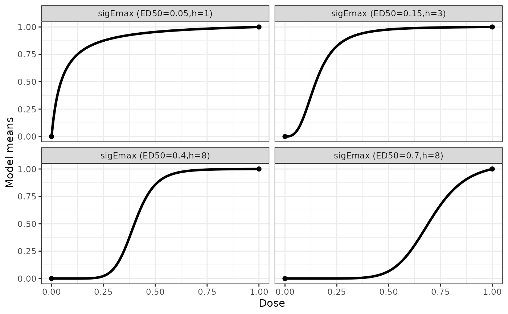
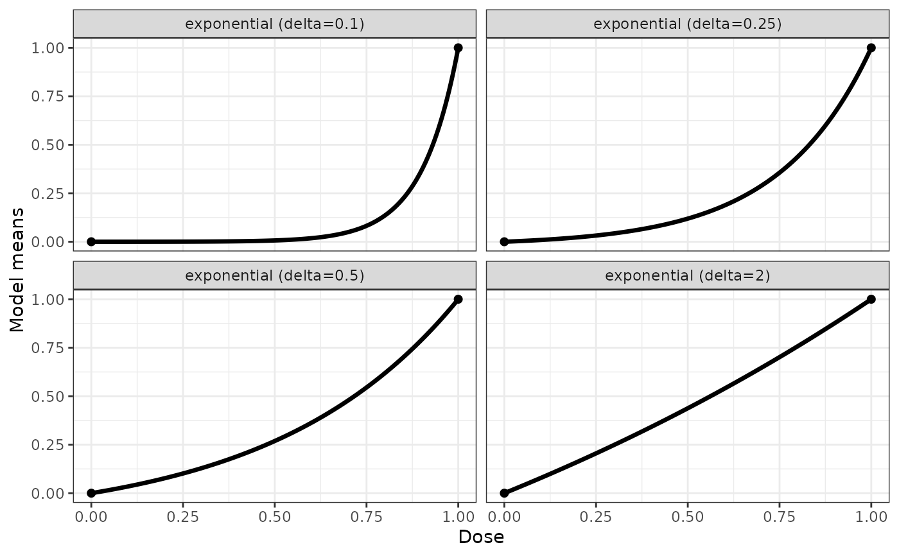
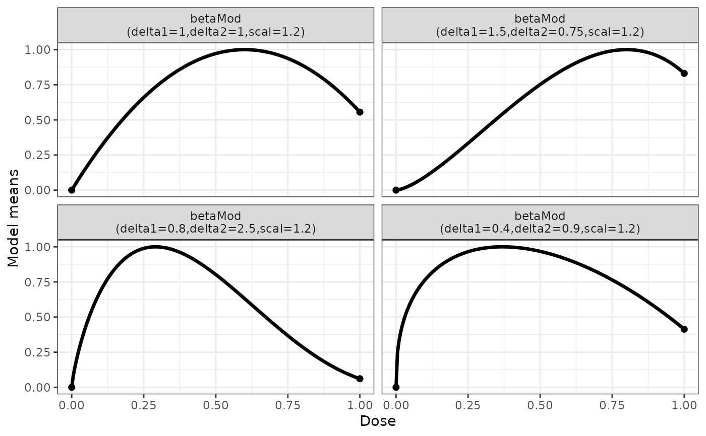
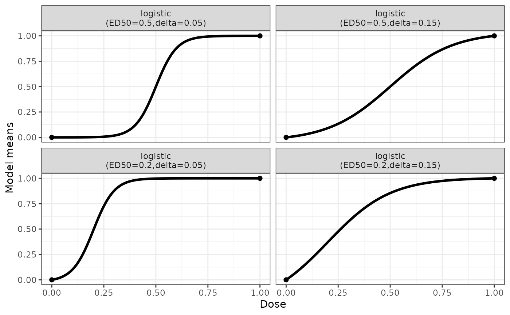

Built-in dose-response models in DoseFinding
Source:R/DoseFinding-package.R, R/drmodels.R
drmodels.RdDose-response model functions and gradients.
Below are the definitions of the model functions:
Emax model $$$$$$ f(d,\theta)=E_0+E_{max}\frac{d}{ED_{50}+d}$$
Sigmoid Emax Model $$$$$$ f(d,\theta)=E_0+E_{max}\frac{d^h}{ED^h_{50}+d^h}$$
Exponential Model $$$$$$ f(d,\theta)=E_0+E_1(\exp(d/\delta)-1)$$
Beta model $$$$$$ f(d,\theta)=E_0+E_{max}B(\delta_1,\delta_2)(d/scal)^{\delta_1}(1-d/scal)^{\delta_2} $$ $$$$ here $$B(\delta_1,\delta_2)=(\delta_1+\delta_2)^{\delta_1+\delta_2}/(\delta_1^{\delta_1} $$$$ \delta_2^{\delta_2})$$ and \(scal\) is a fixed dose scaling parameter.
Linear Model $$$$$$ f(d,\theta)=E_0+\delta d$$
Linear in log Model $$$$$$ f(d,\theta)=E_0+\delta \log(d + off)$$ here \(off\) is a fixed offset parameter.
Logistic Model $$ f(d, \theta) = E_0 + E_{\max}/\left\{1 + \exp\left[ \left(ED_{50} - d \right)/\delta \right] \right\}$$
Quadratic Model $$$$$$ f(d,\theta)=E_0+\beta_1d+\beta_2d^2$$ The standardized model equation for the quadratic model is \(d+\delta d^2\), with \(\delta=\beta_2/\beta_1\).
Linear Interpolation model
The linInt model provides linear
interpolation at the values defined by the nodes vector. In virtually all
situations the nodes vector is equal to the doses used in the analysis. For
example the Mods and the fitMod function
automatically use the doses that are used in the context of the function
call as nodes. The guesstimates specified in the Mods function
need to be the treatment effects at the active doses standardized to the
interval [0,1] (see the examples in the Mods function).
Usage
emax(dose, e0, eMax, ed50)
emaxGrad(dose, eMax, ed50, ...)
sigEmax(dose, e0, eMax, ed50, h)
sigEmaxGrad(dose, eMax, ed50, h, ...)
exponential(dose, e0, e1, delta)
exponentialGrad(dose, e1, delta, ...)
quadratic(dose, e0, b1, b2)
quadraticGrad(dose, ...)
betaMod(dose, e0, eMax, delta1, delta2, scal)
betaModGrad(dose, eMax, delta1, delta2, scal, ...)
linear(dose, e0, delta)
linearGrad(dose, ...)
linlog(dose, e0, delta, off = 1)
linlogGrad(dose, off, ...)
logistic(dose, e0, eMax, ed50, delta)
logisticGrad(dose, eMax, ed50, delta, ...)
linInt(dose, resp, nodes)
linIntGrad(dose, resp, nodes, ...)Arguments
- dose
Dose variable
- e0
For most models placebo effect. For logistic model left-asymptote parameter, corresponding to a basal effect level (not the placebo effect)
- eMax
Beta Model: Maximum effect within dose-range
Emax, sigmoid Emax, logistic Model: Asymptotic maximum effect- ed50
Dose giving half of the asymptotic maximum effect
- ...
Just included for convenience in the gradient functions, so that for example
quadratic(dose, e0=0, b1=1, b2=3)will not throw an error (although the gradient of the quadratic model is independent of e0, b1 and b2).- h
Hill parameter, determining the steepness of the model at the ED50
- e1
Slope parameter for exponential model
- delta
Exponential model: Parameter, controlling the convexity of the model.
Linear and linlog model: Slope parameter
Logistic model: Parameter controlling determining the steepness of the curve- b1
first parameter of quadratic model
- b2
second parameter of quadratic model (controls, whether model is convex or concave)
- delta1
delta1 parameter for beta model
- delta2
delta2 parameter for beta model
- scal
Scale parameter (treated as a fixed value, not estimated)
- off
Offset value to avoid problems with dose=0 (treated as a fixed value, not estimated)
- resp
Response values at the nodes for the linInt model
- nodes
Interpolation nodes for the linear interpolation for the linInt model (treated as a fixed value, not estimated)
Details
The Emax model is used to represent monotone, concave dose-response shapes. To distinguish it from the more general sigmoid emax model it is sometimes also called hyperbolic emax model.
The sigmoid Emax model is an extension of the (hyperbolic) Emax model by introducing an additional parameter h, that determines the steepness of the curve at the ed50 value. The sigmoid Emax model describes monotonic, sigmoid dose-response relationships. In the toxicology literature this model is also called four-parameter log-logistic (4pLL) model.
The quadratic model is intended to capture a possible non-monotonic dose-response relationship.
The exponential model is intended to capture a possible sub-linear or a convex dose-response relationship.
The beta model is intended to capture non-monotone dose-response relationships and is more flexible than the quadratic model. The kernel of the beta model function consists of the kernel of the density function of a beta distribution on the interval [0,scal]. The parameter scal is not estimated but needs to be set to a value larger than the maximum dose. It can be set in most functions (fitMod, Mods) via the addArgs argument, when omitted a value of 1.2*(maximum dose) is used as default, where the maximum dose is inferred from other input to the respective function.
The linear in log-dose model is intended to capture concave shapes.
The parameter off is not estimated in the code but set to a
pre-specified value. It can be set in most functions (fitMod,
Mods) via the addArgs argument, when omitted a value of
0.01*(maximum dose) is used as default, where the maximum dose is
inferred from other input to the respective function.
The logistic model is intended to capture general monotone, sigmoid dose-response relationships. The logistic model and the sigmoid Emax model are closely related: The sigmoid Emax model is a logistic model in log(dose).
The linInt model provids linear interpolation of the means at the doses. This can be used as a "nonparametric" estimate of the dose-response curve, but is probably most interesting for specifying a "nonparametric" truth during planning and assess how well parametric models work under a nonparametric truth. For the function Mods and fitMod the interpolation nodes are selected equal to the dose-levels specified.
References
MacDougall, J. (2006). Analysis of dose-response studies - Emax model,in N. Ting (ed.), Dose Finding in Drug Development, Springer, New York, pp. 127–145
Pinheiro, J. C., Bretz, F. and Branson, M. (2006). Analysis of dose-response studies - modeling approaches, in N. Ting (ed.). Dose Finding in Drug Development, Springer, New York, pp. 146–171
Examples
## some quadratic example shapes
quadModList <- Mods(quadratic = c(-0.5, -0.75, -0.85, -1), doses = c(0,1))
plotMods(quadModList)
## some emax example shapes
emaxModList <- Mods(emax = c(0.02,0.1,0.5,1), doses = c(0,1))
plotMods(emaxModList)
## example for gradient
emaxGrad(dose = (0:4)/4, eMax = 1, ed50 = 0.5)
#> e0 eMax ed50
#> [1,] 1 0.0000000 0.0000000
#> [2,] 1 0.3333333 -0.4444444
#> [3,] 1 0.5000000 -0.5000000
#> [4,] 1 0.6000000 -0.4800000
#> [5,] 1 0.6666667 -0.4444444
## some sigmoid emax example shapes
sigEmaxModList <- Mods(sigEmax = rbind(c(0.05,1), c(0.15,3), c(0.4,8),
c(0.7,8)), doses = c(0,1))
plotMods(sigEmaxModList)

sigEmaxGrad(dose = (0:4)/4, eMax = 1, ed50 = 0.5, h = 8)
#> e0 eMax ed50 h
#> [1,] 1 0.000000000 0.00000000 0.000000000
#> [2,] 1 0.003891051 -0.06201456 -0.002686576
#> [3,] 1 0.500000000 -4.00000000 0.000000000
#> [4,] 1 0.962446824 -0.57828696 0.014654699
#> [5,] 1 0.996108949 -0.06201456 0.002686576
## some exponential example shapes
expoModList <- Mods(exponential = c(0.1,0.25,0.5,2), doses=c(0,1))
plotMods(expoModList)

exponentialGrad(dose = (0:4)/4, e1 = 1, delta = 2)
#> e0 e1 delta
#> [1,] 1 0.0000000 0.00000000
#> [2,] 1 0.1331485 -0.07082178
#> [3,] 1 0.2840254 -0.16050318
#> [4,] 1 0.4549914 -0.27281089
#> [5,] 1 0.6487213 -0.41218032
## some beta model example shapes
betaModList <- Mods(betaMod = rbind(c(1,1), c(1.5,0.75), c(0.8,2.5),
c(0.4,0.9)), doses=c(0,1), addArgs=list(scal = 1.2))
plotMods(betaModList)

betaModGrad(dose = (0:4)/4, eMax = 1, delta1 = 1, delta2 = 1, scal = 5)
#> e0 eMax delta1 delta2
#> [1,] 1 0.00 0.0000000 0.0000000
#> [2,] 1 0.19 -0.4374912 0.1219522
#> [3,] 1 0.36 -0.5793976 0.2116032
#> [4,] 1 0.51 -0.6140261 0.2706204
#> [5,] 1 0.64 -0.5864261 0.3008023
## some logistic model example shapes
logistModList <- Mods(logistic = rbind(c(0.5,0.05), c(0.5,0.15),
c(0.2,0.05), c(0.2,0.15)), doses=c(0,1))
plotMods(logistModList)

logisticGrad(dose = (0:4)/4, eMax = 1, ed50 = 0.5, delta = 0.05)
#> e0 eMax ed50 delta
#> [1,] 1 4.539787e-05 -0.0009079162 0.009079162
#> [2,] 1 6.692851e-03 -0.1329611334 0.664805667
#> [3,] 1 5.000000e-01 -5.0000000000 0.000000000
#> [4,] 1 9.933071e-01 -0.1329611334 -0.664805667
#> [5,] 1 9.999546e-01 -0.0009079162 -0.009079162
## some linInt shapes
genModList <- Mods(linInt = rbind(c(0.5,1,1),
c(0,1,1), c(0,0,1)), doses=c(0,0.5,1,1.5))
plotMods(genModList)
linIntGrad(dose = (0:4)/4, resp=c(0,0.5,1,1,1), nodes=(0:4)/4)
#> [,1] [,2] [,3] [,4] [,5]
#> [1,] 1 0 0 0 0
#> [2,] 0 1 0 0 0
#> [3,] 0 0 1 0 0
#> [4,] 0 0 0 1 0
#> [5,] 0 0 0 0 1